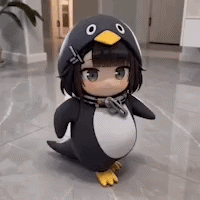
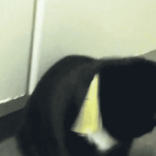

엄마 : 어휴 털날리고 냄새나고!! 강아지 데려오기만 해봐 아주!!.jpg
댓글

강아지 데려오면 쫓아낸다고하면서 딸과 아들을 내쫓습니다
이거 완전 코딩이네요
오동통한거 봐라
살찐거봐 ㅋㅋㅋㅋㅋ
어쩔수가 없더라 부모님들 그냥 막줌 ㅋㅋㅋ
ㄹㅇ뱃살만 봐도 얼마나 사랑받은지 눈에 보임 ㅋㅋㅋㅋ
ㄹㅇ 모든 부모님들이 동물 데려오기만 해봐 했다가 막상 데려오면 더 좋아하는듯 ㅋㅋ
반려동물이 싫어서가 아니라 책임 지는게 힘드니까 그렇지
엄마 : 어휴 털날리고 냄새나는 니가 눈치껏 나가야 하지 않겠니?
엥 존나 귀여운데? 너말한거 아님?
한 명에게 고개를 숙여야 한다면 실세에게 숙여라
냄새나고 털날리는건 나였내...

개생에 저러면 ㄹㅇ 행복하다 가겠네
똥꼬 닦는거 아녀?